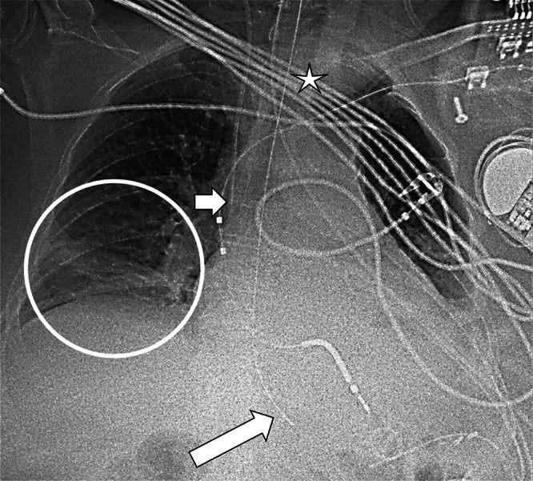
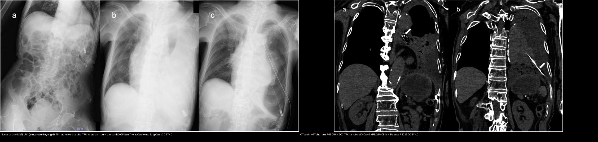
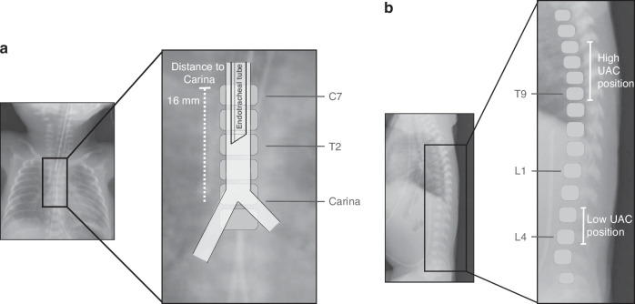
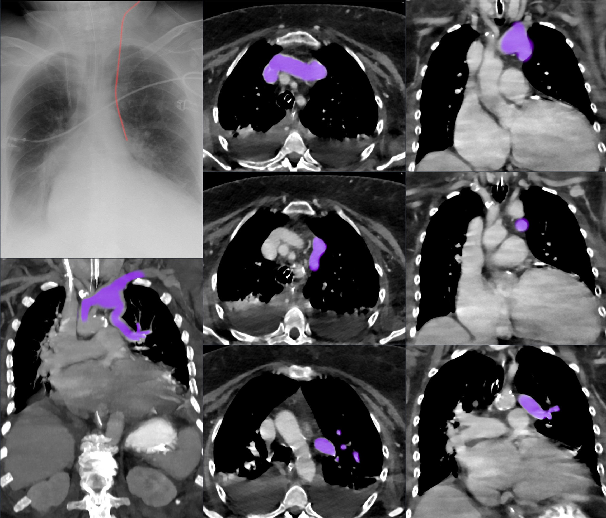

015 — Ống, dây ICU & giả ảnh / Thoracic lines, tubes & Artifacts
Tags: pattern:ong-dây vung:nguc protocol:xq-ICU protocol:CT-nguc
Mức chắc chắn (certainty): tổng hợp y văn (literature synthesis) — nhóm tự biên từ y văn mở CC BY; các ca trong quiz là ca nguyên văn (verbatim case) chép đúng tuổi – bệnh cảnh – chú thích gốc (J Belg Soc Radiol 2025, Gen Thorac Cardiovasc Surg Cases 2025, Pediatr Res 2026, Wikimedia).
1. Tổng quan — 3 đầu ống phải kiểm + con số
- Mọi phim ICU đọc ống trước bệnh: NKQ (ETT) — đầu cách carina 3–5 cm (gập/ngửa cổ di chuyển ± 2 cm); CVC — đầu ở tĩnh mạch chủ trên, trên nhĩ phải (dưới xương đòn, trên carina); sonde dạ dày (NGT) — qua thực quản xuống dưới cơ hoành + đầu ở dạ dày, phải thấy rõ toàn bộ đường đi (không vào phế quản).
- TẠI SAO số quan trọng: NKQ < 2 cm trên carina → tụt vào phế quản gốc phải (phế quản phải dốc hơn) → xẹp phổi trái + căng phổi phải; CVC vào nhĩ → loạn nhịp/thủng; NGT vào phổi → tràn khí/viêm phổi + cấm bơm ăn.
- Trẻ sinh cực non (22–23 tuần): khí quản chỉ dài 20–22 mm (cricoid → carina) → khoảng "an toàn" ở giữa khí quản (ngang T1) chỉ ~10 mm; độ sâu đặt trung vị tối ưu: ETT 5,5 cm · UAC thấp 6,0 cm · UAC cao 9,6 cm · UVC 5,5 cm; ETT đặt đúng chỉ ~75%, cân nặng càng thấp càng dễ đặt QUÁ SÂU (p = 0,018) (Naseh N et al. — Pediatr Res 2026, PMC13221281). → Luôn chụp X-quang kiểm tra sau đặt, ở trẻ nhỏ đặc biệt.
- NGT "trong dạ dày" chưa đủ: đầu sonde đặt ở tâm vị, chỉ vừa qua cơ thắt thực quản dưới (LES) là chưa an toàn — các lỗ bên (side holes) nằm cách đầu vài cm về phía trên, nên nếu lỗ bên còn trên tâm vị, dịch dạ dày có thể trào ngược vào sonde rồi ra lại thực quản → hít sặc. Khuyến cáo hiện hành: đầu sonde ≥ 10 cm dưới khớp dạ dày–thực quản; phương pháp NEX (mũi–tai–mỏm ức) có thể đặt thiếu độ dài → cần dư thêm ~10 cm, và xác nhận bằng X-quang đặc biệt ở người nguy cơ cao (Schueremans T, Hustings N — J Belg Soc Radiol 2025, PMC12594086).
- Khí máu trộn động–tĩnh mạch ở CVC mới đặt = chuông báo lạc chỗ vào mạch bất thường (ca PAPVR dưới).

X-quang ngực nhiều thiết bị: ngôi sao = NKQ, mũi tên ngắn = CVC cảnh trong, mũi tên dài = sonde dạ dày (NGT) — đầu chiếu DƯỚI cơ hoành, vòng tròn = đông đặc thùy dưới phải kèm tràn dịch màng phổi nhỏ. Lưu ý: đầu NGT dưới cơ hoành chưa đủ để kết luận an toàn (xem cảnh báo mục 5). Nguồn: Schueremans T, Hustings N, J Belg Soc Radiol 2025 (PMC12594086), CC BY 4.0. Giữ nguyên bản.2. Gamut lạc chỗ
- CVC cảnh trong trái: dễ vào tĩnh mạch vô danh đối diện/tĩnh mạch azygos, hoặc mạch bất thường (PAPVR — tĩnh mạch phổi đổ lạc một phần vào vô danh trái — ca dưới): khí máu lẫn động–tĩnh mạch.
- NKQ sâu: vào phế quản gốc phải → xẹp trái + căng phổi phải; nông quá → tuột ra khi ngửa cổ; trẻ 22–23 tuần cực dễ sâu do khí quản ngắn.
- NGT lạc: vào phế quản gốc trái → khoang màng phổi (thủng màng phổi, mủ màng phổi rò) hoặc cuộn trong thực quản (không qua tâm vị). Cấm bơm mọi thứ qua sonde chưa xác nhận.
- Dẫn lưu màng phổi: đầu trong nhu mô (không vào khoang), kẹp/tắc, đặt dưới cơ hoành.
3. Bảng so sánh phân biệt (ma trận đối chiếu)
| Thực thể (entity) | Hình ảnh điển hình | Chốt vào (rule-in) | Chốt loại (rule-out) | Gợi ý xác nhận |
|---|---|---|---|---|
| NKQ đúng vị trí | Đầu ống 3–5 cm trên carina, carina thấy rõ, hai phổi nở đều | Đầu trên carina 3–5 cm + carina rõ + phổi nở đều | Đầu < 2 cm hoặc trong phế quản gốc phải → SAI | X-quang tại giường sau đặt; ghi tư thế (ít gập cổ) |
| NKQ quá sâu (1 bên) | Đầu lệch phế quản gốc phải → xẹp trái + căng giãn phải, trung thất lệch | Đầu lệch sang phải + xẹp phổi TRÁI mới | Hai phổi nở đều → không sâu | Rút 2–3 cm, nghe lại, chụp kiểm tra |
| CVC đúng | Đầu ở TVC trên/nhĩ phải, đường đi liền mạch, khí máu tĩnh mạch | Đường đi đúng + khí máu tĩnh mạch | Khí máu lẫn ĐM/tĩnh mạch hoặc đường đi tận cùng nhĩ → SAI | X-quang ± CT; siêu âm tại giường |
| CVC lạc (PAPVR) | CVC cảnh trong trái "trông đúng" nhưng đầu vào vô danh trái; khí máu lẫn | CVC trái + khí máu lẫn (như máu pha) + đường đi bất thường | Loại trừ bằng CT mạch máu (PAPVR) | CT mạch xác nhận trước khi dùng — không dùng đường này |
| NGT đúng (an toàn) | Đường đi qua thực quản → dưới cơ hoành, đầu ≥ 10 cm dưới khớp dạ dày–thực quản trong thân dạ dày | Đường đi rõ + đầu sâu trong dạ dày (≥ 10 cm dưới GOJ) | Đầu chỉ ở tâm vị/cạnh LES → lỗ bên còn trên GOJ → nguy cơ hít sặc | X-quang; CT khi cần; đánh giá toàn bộ lỗ bên |
| NGT lạc vào phế quản | Sonde đi phế quản gốc trái → khoang màng phổi; mờ cả phổi trái sau thay sonde; mủ/rò màng phổi | Đường đi sonde nằm trong phế quản/màng phổi + mờ phổi mới | Đường đi đúng xuống dạ dày → không lạc | CT (vành) xác nhận; rút ngay + xử trí màng phổi |
| Dẫn lưu màng phổi đúng | Ống trong khoang màng phổi, lỗ bên trong, phổi giãn ra + hết dịch/khí | Ống trong khoang + phổi giãn | Ống trong nhu mô/dưới cơ hoành → SAI | X-quang/CT; kiểm tra kẹp-tắc |

*Trái: X-quang — (a) ngay sau thay sonde; (b) 19 giờ sau: mờ mờ cả phổi TRÁI; (c) sau dẫn lưu màng phổi. Phải: CT vành — sonde chui qua PHẾ QUẢN GỐC TRÁI (a) rồi vào KHOANG MÀNG PHỔI (b). Nguồn: Matsuda R et al., Gen Thorac Cardiovasc Surg Cases 2025 (PMC11912723), CC BY 4.0. Ảnh ghép letterbox, giữ tỉ lệ.*4. Protocol phim ICU
- X-quang ngực tại giường là bắt buộc sau MỌI thủ thuật (đặt/rút/đổi ống) và ghi rõ tư thế (AP nằm làm tim bè, mạch dồn về đáy giả bệnh).
- Đọc theo thứ tự ống → dây → da → bệnh: 3 đầu ống (NKQ/CVC/NGT) → dẫn lưu → dây monitor (giả nốt/đường) → nếp da/tóc (giả tràn khí) → cuối cùng mới đọc bệnh lý nhu mô.
- Trẻ cực non (≤ 23 tuần): dùng độ sâu đặt chuẩn hóa (ETT 5,5 cm; UAC thấp 6,0/cao 9,6; UVC 5,5 cm), luôn chụp X-quang xác nhận; nhớ cân nặng thấp → dễ đặt quá sâu.
- Nghi lạc chỗ đặc biệt (CVC khí máu lẫn, NGT lạc phế quản): chuyển CT ngực (mạch máu với CVC; vành với NGT) để xác nhận trước khi dùng đường truyền/cho ăn.
flowchart TD
A["X-quang sau thủ thuật ICU"] --> B{"NKQ: đầu cách carina?"}
B -->|"3–5 cm"| C["Đúng"]
B -->|"< 2 cm hoặc trong PQ gốc phải"| D["Rút 2–3 cm + chụp lại"]
A --> E{"CVC: đường đi + khí máu?"}
E -->|"Đúng (TVC trên) + máu tĩnh mạch"| C
E -->|"Lẫn ĐM/tĩnh mạch hoặc vào nhĩ"| F["KHÔNG dùng — CT mạch xác nhận"]
A --> G{"NGT: đầu + lỗ bên?"}
G -->|"≥ 10 cm dưới GOJ, trong thân dạ dày"| C
G -->|"Chỉ ở tâm vị / lạc phế quản"| H["Rút ngay — cấm bơm; CT nếu lạc phế quản"]
5. Cạm bẫy
- "Đầu NGT dưới cơ hoành = an toàn" là SAI: đầu ở tâm vị (chỉ vừa qua LES) vẫn làm lỗ bên nằm trên khớp dạ dày–thực quản → trào ngược → hít sặc (Schueremans T, Hustings N 2025). Phải đánh giá cả vị trí lỗ bên + toàn bộ đường đi, mục tiêu đầu ≥ 10 cm dưới GOJ.
- CVC "trông đúng đường" vẫn có thể lạc (PAPVR): khí máu lẫn động–tĩnh mạch là chuông báo — không dùng đường truyền trước khi CT mạch xác nhận.
- ECG leads, dây monitor đè trường phổi giả nốt/đường — nhìn kỹ vật ngoài thân; nếp da/tóc giả tràn khí (bài 041).
- Tư thế AP giả tim to/phù phổi (bài 010/033) — luôn đọc theo tư thế.
- Satisfaction of search: thấy ống đúng vị trí rồi dừng — vẫn phải quét biến chứng (tràn khí màng phổi sau đặt CVC, xẹp phổi do NKQ sâu, mờ phổi sau thay NGT).
6. Tự lượng giá — Blind Quiz
Ca 1 — Bệnh nhân ICU nhiều thiết bị. Nhìn X-quang, kiểm tra từng đầu ống trước khi đọc bệnh.
- Gợi ý lâm sàng (clinical context): bệnh nhân ICU thở máy, có NKQ – CVC cảnh trong – sonde dạ dày.
- Câu hỏi: Xác định NKQ, CVC, NGT? Đầu NGT ở đâu — đã an toàn chưa? Vì sao còn phải cảnh giác?
Bấm để hiện đáp án (findings + chẩn đoán)
- Dấu hiệu (findings): ngôi sao = NKQ; mũi tên ngắn = CVC cảnh trong; mũi tên dài = NGT, đầu chiếu dưới cơ hoành; vòng tròn = đông đặc thùy dưới phải + tràn dịch màng phổi nhỏ.
- Chẩn đoán (diagnosis)/kết luận: các đầu ống trông đúng vị trí "kinh điển", NHƯNG đầu NGT dưới cơ hoành chưa đủ để loại trừ nguy cơ hít sặc — cần xác định đầu ≥ 10 cm dưới khớp dạ dày–thực quản và kiểm tra lỗ bên (ca gốc CT cho thấy đầu ở tâm vị, chỉ vừa qua LES → vẫn trào ngược).
- Nguồn ảnh: Schueremans T, Hustings N., J Belg Soc Radiol 2025 (PMC12594086), CC BY 4.0.
Ca 2 — Bệnh nhân vừa thay sonde dạ dày; 19 giờ sau mờ cả phổi trái. Nhìn ảnh, chuyện gì xảy ra?
- Câu hỏi: Đường đi sonde ở đâu? Vì sao phổi trái mờ? Xử trí?
Bấm để hiện đáp án (findings + chẩn đoán)
- Dấu hiệu (findings): (a) ngay sau thay sonde; (b) 19 giờ sau: mờ rõ cả phổi TRÁI; (c) sau dẫn lưu màng phổi. CT vành: sonde chui qua PHẾ QUẢN GỐC TRÁI (a) rồi vào KHOANG MÀNG PHỔI (b).
- Chẩn đoán (diagnosis): sonde dạ dày lạc vào phế quản gốc trái → thủng màng phổi → mủ màng phổi rò (fistulous empyema) — vì sonde đi nhầm đường qua phế quản vào khoang màng phổi.
- Xử trí: rút sonde ngay, dẫn lưu màng phổi + kháng sinh, sửa chữa rò (ca gốc phải mổ). Cấm bơm khi chưa xác nhận vị trí.
- Nguồn ảnh: Matsuda R et al., Gen Thorac Cardiovasc Surg Cases 2025 (PMC11912723), CC BY 4.0.
Ca 3 — Trẻ sinh 22 tuần, đặt NKQ trong hồi sức. X-quang kiểm tra độ sâu:

- Câu hỏi: Đầu NKQ cách carina bao nhiêu là hợp lý ở trẻ cực non? Vì sao trẻ này dễ đặt quá sâu?
Bấm để hiện đáp án (findings + chẩn đoán)
- Dấu hiệu (findings): khí quản trẻ 22–23 tuần chỉ dài 20–22 mm (cricoid → carina); minh họa cho thấy đầu NKQ cách carina ~16 mm đo trên phim, khoảng an toàn giữa khí quản (ngang T1) chỉ ~10 mm; kèm vị trí UAC cao/thấp.
- Kết luận: cân nặng càng thấp → càng dễ đặt NKQ QUÁ SÂU; độ sâu trung vị tối ưu ETT 5,5 cm, ETT đặt đúng chỉ ~75% → luôn chụp X-quang xác nhận, điều chỉnh ngay nếu quá sâu.
- Nguồn ảnh: Naseh N et al., Pediatr Res 2026 (PMC13221281), CC BY 4.0.
Ca 4 — CVC cảnh trong trái mới đặt, khí máu lẫn động–tĩnh mạch. Kết luận?

- Câu hỏi: đầu catheter ở đâu? Vì sao khí máu lẫn? Có dùng được đường này không?
Bấm để hiện đáp án (findings + chẩn đoán)
- Dấu hiệu (findings): đầu CVC vào tĩnh mạch vô danh trái do tĩnh mạch phổi đổ lạc một phần (PAPVR) — X-quang + CT annotated.
- Chẩn đoán/kết luận: máu lẫn nên KHÔNG dùng đường này; đặt lại vị trí khác + CT mạch xác nhận.
- Nguồn ảnh: Hellerhoff, Wikimedia Commons, CC BY-SA 4.0.
Bài liên quan chéo
- 001 – Tổng quan hệ Ngực
- 010 – Giải phẫu ngực cắt lớp (carina, rốn phổi)
- 041 – Tràn khí màng phổi (biến chứng thủ thuật)
- 613 – Viêm tiểu phế quản ở nhũ nhi (nếp da/dây giả tổn thương ở trẻ)
Ảnh
- Ảnh CC BY 4.0 (Europe PMC) và CC BY-SA 4.0 (Wikimedia) — attribution từng ảnh trong
images/CREDITS.md. - Ảnh ghép giữ nguyên tỉ lệ (letterbox), không crop/kéo giãn.
Không dùng để chẩn đoán độc lập khi chưa có người hướng dẫn.